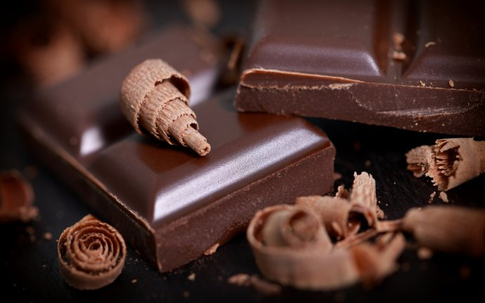

1 / 3
milk chocolate
2 / 3

white Chocolate
3 / 3

Dark chocolate
Chocolate is a preparation of roasted and ground cacao seeds that is made in the form of a liquid, paste, or in a
block, which may also be used as a flavoring ingredient in other foods. The earliest signs of use are associated with
Olmec sites (within what would become Mexico’s post-colonial territory) suggesting consumption of chocolate
beverages, dating from 19 centuries BCE. The majority of Mesoamerican people made chocolate beverages, including
the Maya and Aztecs. The word chocolate is derived from the Spanish word chocolate, deriving in turn from the
Classical Nahuatl word xocolatl.[4]The seeds of the cacao tree have an intense bitter taste and must be fermented
to develop the flavor. After fermentation, the beans are dried, cleaned, and roasted. The shell is removed to
produce cacao nibs, which are then ground to cocoa mass, unadulterated chocolate in rough form. Once the cocoa mass is
liquefied by heating, it is called chocolate liquor. The liquor may also be cooled and processed into its two
components: cocoa solids and cocoa butter. Baking chocolate, also called bitter chocolate, contains cocoa solids and
cocoa butter in varying proportions, without any added sugar. Powdered baking cocoa, which contains more fiber than
cocoa butter, can be processed with alkali to produce dutch cocoa. Much of the chocolate consumed today is in the
form of sweet chocolate, a combination of cocoa solids, cocoa butter or added vegetable oils, and sugar. Milk
chocolate is sweet chocolate that additionally contains milk powder or condensed milk. White chocolate contains cocoa
butter, sugar, and milk, but no cocoa solids.